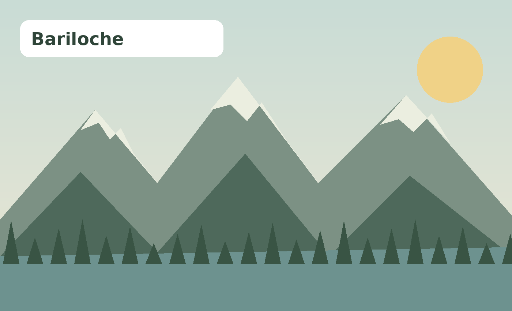
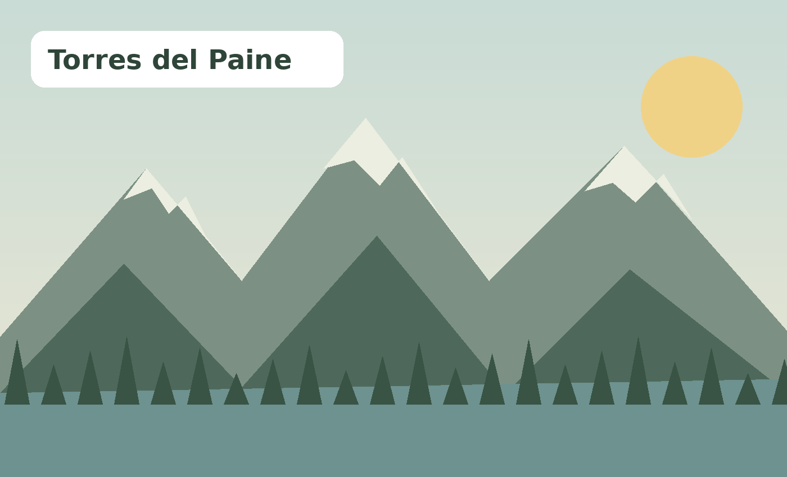

Playa · Brasil
Búzios
Playas de aguas tranquilas, calles encantadoras y un ambiente relajado hacen de Búzios una escapada ideal.
Explorar destinoElegí entre playa y montaña y descubrí una propuesta de viaje con información e itinerario descargable.
Playas de aguas tranquilas, calles encantadoras y un ambiente relajado hacen de Búzios una escapada ideal.
Explorar destino
Caribe, arena clara y vestigios mayas junto al mar: Tulum combina descanso, naturaleza y cultura.
Explorar destino
Una isla caribeña conocida por sus aguas de distintos tonos de azul, arrecifes y excursiones marítimas.
Explorar destino
Lagos, bosques y montañas se unen en una de las grandes postales patagónicas de Argentina.
Explorar destino
Un paisaje monumental de torres, glaciares, lagos y senderos para quienes buscan una aventura de naturaleza.
Explorar destinoEntre la cordillera de los Andes, viñedos y pueblos de montaña, Mendoza combina aventura y descanso.
Explorar destino